Chapter Thirteen
NUCLEI
NUCLEI

In the previous chapter, we have learnt that in every atom, the positive charge and mass are densely concentrated at the centre of the atom forming its nucleus. The overall dimensions of a nucleus are much smaller than those of an atom. Experiments on scattering of α-particles demonstrated that the radius of a nucleus was smaller than the radius of an atom by a factor of about 104. This means the volume of a nucleus is about 10–12 times the volume of the atom. In other words, an atom is almost empty. If an atom is enlarged to the size of a classroom, the nucleus would be of the size of pinhead. Nevertheless, the nucleus contains most (more than 99.9%) of the mass of an atom.
Does the nucleus have a structure, just as the atom does? If so, what are the constituents of the nucleus? How are these held together? In this chapter, we shall look for answers to such questions. We shall discuss various properties of nuclei such as their size, mass and stability, and also associated nuclear phenomena such as radioactivity, fission and fusion.
The mass of an atom is very small, compared to a kilogram; for example, the mass of a carbon atom, 12C, is 1.992647 × 10–26 kg. Kilogram is not a very convenient unit to measure such small quantities. Therefore, a different mass unit is used for expressing atomic masses. This unit is the atomic mass unit (u), defined as 1/12th of the mass of the carbon (12C) atom. According to this definition
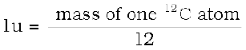

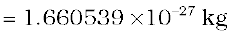 (13.1)
The atomic masses of various elements expressed in atomic mass unit (u) are close to being integral multiples of the mass of a hydrogen atom. There are, however, many striking exceptions to this rule. For example, the atomic mass of chlorine atom is 35.46 u.
Accurate measurement of atomic masses is carried out with a mass spectrometer, The measurement of atomic masses reveals the existence of different types of atoms of the same element, which exhibit the same chemical properties, but differ in mass. Such atomic species of the same element differing in mass are called isotopes. (In Greek, isotope means the same place, i.e. they occur in the same place in the periodic table of elements.) It was found that practically every element consists of a mixture of several isotopes. The relative abundance of different isotopes differs from element to element. Chlorine, for example, has two isotopes having masses 34.98 u and 36.98 u, which are nearly integral multiples of the mass of a hydrogen atom. The relative abundances of these isotopes are 75.4 and 24.6 per cent, respectively. Thus, the average mass of a chlorine atom is obtained by the weighted average of the masses of the two isotopes, which works out to be
= 
= 35.47 u
which agrees with the atomic mass of chlorine.
Even the lightest element, hydrogen has three isotopes having masses 1.0078 u, 2.0141 u, and 3.0160 u. The nucleus of the lightest atom of hydrogen, which has a relative abundance of 99.985%, is called the proton. The mass of a proton is
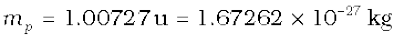 (13.2)
This is equal to the mass of the hydrogen atom (= 1.00783u), minus the mass of a single electron (me = 0.00055 u). The other two isotopes of hydrogen are called deuterium and tritium. Tritium nuclei, being unstable, do not occur naturally and are produced artificially in laboratories.
The positive charge in the nucleus is that of the protons. A proton carries one unit of fundamental charge and is stable. It was earlier thought that the nucleus may contain electrons, but this was ruled out later using arguments based on quantum theory. All the electrons of an atom are outside the nucleus. We know that the number of these electrons outside the nucleus of the atom is Z, the atomic number. The total charge of the atomic electrons is thus (–Ze), and since the atom is neutral, the charge of the nucleus is (+Ze). The number of protons in the nucleus of the atom is, therefore, exactly Z, the atomic number.
Discovery of Neutron
Since the nuclei of deuterium and tritium are isotopes of hydrogen, they must contain only one proton each. But the masses of the nuclei of hydrogen, deuterium and tritium are in the ratio of 1:2:3. Therefore, the nuclei of deuterium and tritium must contain, in addition to a proton, some neutral matter. The amount of neutral matter present in the nuclei of these isotopes, expressed in units of mass of a proton, is approximately equal to one and two, respectively. This fact indicates that the nuclei of atoms contain, in addition to protons, neutral matter in multiples of a basic unit. This hypothesis was verified in 1932 by James Chadwick who observed emission of neutral radiation when beryllium nuclei were bombarded with alpha-particles. (α-particles are helium nuclei, to be discussed in a later section). It was found that this neutral radiation could knock out protons from light nuclei such as those of helium, carbon and nitrogen. The only neutral radiation known at that time was photons (electromagnetic radiation). Application of the principles of conservation of energy and momentum showed that if the neutral radiation consisted of photons, the energy of photons would have to be much higher than is available from the bombardment of beryllium nuclei with α-particles. The clue to this puzzle, which Chadwick satisfactorily solved, was to assume that the neutral radiation consists of a new type of neutral particles called neutrons. From conservation of energy and momentum, he was able to determine the mass of new particle ‘as very nearly the same as mass of proton’.
The mass of a neutron is now known to a high degree of accuracy. It is
mn = 1.00866 u = 1.6749×10–27 kg (13.3)
Chadwick was awarded the 1935 Nobel Prize in Physics for his discovery of the neutron.
A free neutron, unlike a free proton, is unstable. It decays into a proton, an electron and a antineutrino (another elementary particle), and has a mean life of about 1000s. It is, however, stable inside the nucleus.
The composition of a nucleus can now be described using the following terms and symbols:
Z - atomic number = number of protons [13.4(a)]
N - neutron number = number of neutrons [13.4(b)]
A - mass number = Z + N
= total number of protons and neutrons [13.4(c)]
One also uses the term nucleon for a proton or a neutron. Thus the number of nucleons in an atom is its mass number A.
Nuclear species or nuclides are shown by the notation 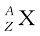 where X is the chemical symbol of the species. For example, the nucleus of gold is denoted by 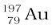. It contains 197 nucleons, of which 79 are protons and the rest118 are neutrons.
The composition of isotopes of an element can now be readily explained. The nuclei of isotopes of a given element contain the same number of protons, but differ from each other in their number of neutrons. Deuterium,  , which is an isotope of hydrogen, contains one proton and one neutron. Its other isotope tritium,
, which is an isotope of hydrogen, contains one proton and one neutron. Its other isotope tritium,  , contains one proton and two neutrons. The element gold has 32 isotopes, ranging from A =173 to A = 204. We have already mentioned that chemical properties of elements depend on their electronic structure. As the atoms of isotopes have identical electronic structure they have identical chemical behaviour and are placed in the same location in the periodic table.
, contains one proton and two neutrons. The element gold has 32 isotopes, ranging from A =173 to A = 204. We have already mentioned that chemical properties of elements depend on their electronic structure. As the atoms of isotopes have identical electronic structure they have identical chemical behaviour and are placed in the same location in the periodic table.
All nuclides with same mass number A are called isobars. For example, the nuclides  and 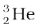 are isobars. Nuclides with same neutron number N but different atomic number Z, for example
and 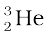 are isobars. Nuclides with same neutron number N but different atomic number Z, for example  and , are called isotones.
and , are called isotones.
As we have seen in Chapter 12, Rutherford was the pioneer who postulated and established the existence of the atomic nucleus. At Rutherford’s suggestion, Geiger and Marsden performed their classic experiment: on the scattering of α-particles from thin gold foils. Their experiments revealed that the distance of closest approach to a gold nucleus of an α-particle of kinetic energy 5.5 MeV is about 4.0 × 10–14 m. The scattering of α-particle by the gold sheet could be understood by Rutherford by assuming that the coulomb repulsive force was solely responsible for scattering. Since the positive charge is confined to the nucleus, the actual size of the nucleus has to be less than 4.0 × 10–14 m.
If we use α-particles of higher energies than 5.5 MeV, the distance of closest approach to the gold nucleus will be smaller and at some point the scattering will begin to be affected by the short range nuclear forces, and differ from Rutherford’s calculations. Rutherford’s calculations are based on pure coulomb repulsion between the positive charges of the α-particle and the gold nucleus. From the distance at which deviations set in, nuclear sizes can be inferred.
By performing scattering experiments in which fast electrons, instead of α-particles, are projectiles that bombard targets made up of various elements, the sizes of nuclei of various elements have been accurately measured.
It has been found that a nucleus of mass number A has a radius
R = R0 A1/3 (13.5)
where R0 = 1.2 × 10–15 m. This means the volume of the nucleus, which is proportional to R3 is proportional to A. Thus the density of nucleus is a constant, independent of A, for all nuclei. Different nuclei are likes drop of liquid of constant density. The density of nuclear matter is approximately 2.3 × 1017 kg m–3. This density is very large compared to ordinary matter, say water, which is 103 kg m–3. This is understandable, as we have already seen that most of the atom is empty. Ordinary matter consisting of atoms has a large amount of empty space.
Example 13.1 Given the mass of iron nucleus as 55.85u and A=56, find the nuclear density?
Solution
mFe = 55.85, u = 9.27 × 10–26 kg
Nuclear density = 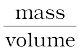 = 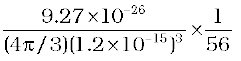
= 2.29 × 1017 kg m–3
The density of matter in neutron stars (an astrophysical object) is comparable to this density. This shows that matter in these objects has been compressed to such an extent that they resemble a big nucleus.
13.4.1 Mass – Energy
Einstein showed from his theory of special relativity that it is necessary to treat mass as another form of energy. Before the advent of this theory of special relativity it was presumed that mass and energy were conserved separately in a reaction. However, Einstein showed that mass is another form of energy and one can convert mass-energy into other forms of energy, say kinetic energy and vice-versa.
Einstein gave the famous mass-energy equivalence relation
E = mc2 (13.6)
Here the energy equivalent of mass m is related by the above equation and c is the velocity of light in vacuum and is approximately equal to 3×108 m s–1.
Example 13.2 Calculate the energy equivalent of 1 g of substance.
Solution
Energy, E = 10–3 × ( 3 × 108)2 J
E = 10–3 × 9 × 1016 = 9 × 1013 J
Thus, if one gram of matter is converted to energy, there is a release of enormous amount of energy.
Experimental verification of the Einstein’s mass-energy relation has been achieved in the study of nuclear reactions amongst nucleons, nuclei, electrons and other more recently discovered particles. In a reaction the conservation law of energy states that the initial energy and the final energy are equal provided the energy associated with mass is also included. This concept is important in understanding nuclear masses and the interaction of nuclei with one another. They form the subject matter of the next few sections.
13.4.2 Nuclear binding energy
In Section 13.2 we have seen that the nucleus is made up of neutrons and protons. Therefore it may be expected that the mass of the nucleus is equal to the total mass of its individual protons and neutrons. However, the nuclear mass M is found to be always less than this. For example, let us consider  ; a nucleus which has 8 neutrons and 8 protons. We have
; a nucleus which has 8 neutrons and 8 protons. We have
Mass of 8 neutrons = 8 × 1.00866 u
Mass of 8 protons = 8 × 1.00727 u
Mass of 8 electrons = 8 × 0.00055 u
Therefore the expected mass of  nucleus
nucleus
= 8 × 2.01593 u = 16.12744 u.
The atomic mass of 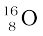 found from mass spectroscopy experiments is seen to be 15.99493 u. Substracting the mass of 8 electrons (8 × 0.00055 u) from this, we get the experimental mass of  nucleus to be 15.99053 u.
nucleus to be 15.99053 u.
Thus, we find that the mass of the 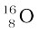 nucleus is less than the total mass of its constituents by 0.13691u. The difference in mass of a nucleus and its constituents, ∆M, is called the mass defect, and is given by
 (13.7)
(13.7)
What is the meaning of the mass defect? It is here that Einstein’s equivalence of mass and energy plays a role. Since the mass of the oxygen nucleus is less that the sum of the masses of its constituents (8 protons and 8 neutrons, in the unbound state), the equivalent energy of the oxygen nucleus is less than that of the sum of the equivalent energies of its constituents. If one wants to break the oxygen nucleus into 8 protons and 8 neutrons, this extra energy ∆M c2, has to supplied. This energy required Eb is related to the mass defect by
Eb = ∆ M c2 (13.8)
Example 13.3 Find the energy equivalent of one atomic mass unit, first in Joules and then in MeV. Using this, express the mass defect of  in MeV/c2.
in MeV/c2.
Solution
1u = 1.6605 × 10–27 kg n
To convert it into energy units, we multiply it by c2 and find that energy equivalent = 1.6605 × 10–27 × (2.9979 × 108)2 kg m2/s2
= 1.4924 × 10–10 J
= 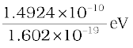
= 0.9315 × 109 eV
= 931.5 MeV
or , 1u = 931.5 MeV/c2
For  , ∆M = 0.13691 u = 0.13691×931.5 MeV/c2
, ∆M = 0.13691 u = 0.13691×931.5 MeV/c2
= 127.5 MeV/c2
The energy needed to separate into its constituents is thus
127.5 MeV/c2.
If a certain number of neutrons and protons are brought together to form a nucleus of a certain charge and mass, an energy Eb will be released in the process. The energy Eb is called the binding energy of the nucleus. If we separate a nucleus into its nucleons, we would have to supply a total energy equal to Eb, to those particles. Although we cannot tear apart a nucleus in this way, the nuclear binding energy is still a convenient measure of how well a nucleus is held together. A more useful measure of the binding between the constituents of the nucleus is the binding energy per nucleon, Ebn, which is the ratio of the binding energy Eb of a nucleus to the number of the nucleons, A, in that nucleus:
Ebn = Eb / A (13.9)
We can think of binding energy per nucleon as the average energy per nucleon needed to separate a nucleus into its individual nucleons.
Figure 13.1 is a plot of the binding energy per nucleon Ebn versus the mass number A for a large number of nuclei. We notice the following main features of
the plot:
(i) the binding energy per nucleon, Ebn, is practically constant, i.e. practically independent of the atomic number for nuclei of middle mass number ( 30 < A < 170). The curve has a maximum of about 8.75 MeV for A = 56 and has a value of 7.6 MeV for A = 238.
(ii) Ebn is lower for both light nuclei (A<30) and heavy nuclei (A>170).
We can draw some conclusions from these two observations:
(i) The force is attractive and sufficiently strong to produce a binding energy of a few MeV per nucleon.
(ii) The constancy of the binding energy in the range 30 < A < 170 is a consequence of the fact that the nuclear force is short-ranged. Consider a particular nucleon inside a sufficiently large nucleus. It will be under the influence of only some of its neighbours, which come within the range of the nuclear force. If any other nucleon is at a distance more than the range of the nuclear force from the particular nucleon it will have no influence on the binding energy of the nucleon under consideration. If a nucleon can have a maximum of p neighbours within the range of nuclear force, its binding energy would be proportional to p. Let the binding energy of the nucleus be pk, where k is a constant having the dimensions of energy. If we increase A by adding nucleons they will not change the binding energy of a nucleon inside. Since most of the nucleons in a large nucleus reside inside it and not on the surface, the change in binding energy per nucleon would be small. The binding energy per nucleon is a constant and is approximately equal to pk. The property that a given nucleon influences only nucleons close to it is also referred to as saturation property of the nuclear force.
(iii) A very heavy nucleus, say A = 240, has lower binding energy per nucleon compared to that of a nucleus with A = 120. Thus if a nucleus A = 240 breaks into two A = 120 nuclei, nucleons get more tightly bound. This implies energy would be released in the process. It has very important implications for energy production through fission, to be discussed later in Section 13.7.1.
(iv) Consider two very light nuclei (A10) joining to form a heavier nucleus. The binding energy per nucleon of the fused heavier nuclei is more than the binding energy per nucleon of the lighter nuclei. This means that the final system is more tightly bound than the initial system. Again energy would be released in such a process of fusion. This is the energy source of sun, to be discussed later in Section 13.7.3.

The force that determines the motion of atomic electrons is the familiar Coulomb force. In Section 13.4, we have seen that for average mass nuclei the binding energy per nucleon is approximately 8 MeV, which is much larger than the binding energy in atoms. Therefore, to bind a nucleus together there must be a strong attractive force of a totally different kind. It must be strong enough to overcome the repulsion between the (positively charged) protons and to bind both protons and neutrons into the tiny nuclear volume. We have already seen that the constancy of binding energy per nucleon can be understood in terms of its short-range. Many features of the nuclear binding force are summarised below. These are obtained from a variety of experiments carried out during 1930 to 1950.
(i) The nuclear force is much stronger than the Coulomb force acting between charges or the gravitational forces between masses. The nuclear binding force has to dominate over the Coulomb repulsive force between protons inside the nucleus. This happens only because the nuclear force is much stronger than the coulomb force. The gravitational force is much weaker than even Coulomb force.
(ii) The nuclear force between two nucleons falls rapidly to zero as their distance is more than a few femtometres. This leads to saturation of forces in a medium or a large-sized nucleus, which is the reason for the constancy of the binding energy per nucleon.
A rough plot of the potential energy between two nucleons as a function of distance is shown in the Fig. 13.2. The potential energy is a minimum at a distance r0 of about 0.8 fm. This means that the force is attractive for distances larger than 0.8 fm and repulsive if they are separated by distances less than 0.8 fm.
(iii) The nuclear force between neutron-neutron, proton-neutron and proton-proton is approximately the same. The nuclear force does not depend on the electric charge.
Unlike Coulomb’s law or the Newton’s law of gravitation there is no simple mathematical form of the nuclear force.
A. H. Becquerel discovered radioactivity in 1896 purely by accident. While studying the fluorescence and phosphorescence of compounds irradiated with visible light, Becquerel observed an interesting phenomenon. After illuminating some pieces of uranium-potassium sulphate with visible light, he wrapped them in black paper and separated the package from a photographic plate by a piece of silver. When, after several hours of exposure, the photographic plate was developed, it showed blackening due to something that must have been emitted by the compound and was able to penetrate both black paper and the silver.
Experiments performed subsequently showed that radioactivity was a nuclear phenomenon in which an unstable nucleus undergoes a decay. This is referred to as radioactive decay. Three types of radioactive decay occur in nature :
(i) α-decay in which a helium nucleus 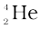 is emitted;
(ii) β-decay in which electrons or positrons (particles with the same mass as electrons, but with a charge exactly opposite to that of electron) are emitted;
(iii) γ-decay in which high energy (hundreds of keV or more) photons are emitted.
Each of these decay will be considered in subsequent sub-sections.
13.6.1 Law of radioactive decay
In any radioactive sample, which undergoes α, β or γ-decay, it is found that the number of nuclei undergoing the decay per unit time is proportional to the total number of nuclei in the sample. If N is the number of nuclei in the sample and ∆N undergo decay in time ∆t then

or, ∆N/∆t = λN, (13.10)
where λ is called the radioactive decay constant or disintegration constant.
The change in the number of nuclei in the sample* is dN = – ∆N in time ∆t. Thus the rate of change of N is (in the limit ∆t → 0)

* ∆N is the number of nuclei that decay, and hence is always positive. dN is the change in N, which may have either sign. Here it is negative, because out of original N nuclei, ∆N have decayed, leaving (N–∆N) nuclei.
or, 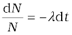
Now, integrating both sides of the above equation,we get,
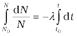 (13.11)
or, ln N − ln N0 = −λ (t – t0) (13.12)
Here N0 is the number of radioactive nuclei in the sample at some arbitrary time t0 and N is the number of radioactive nuclei at any subsequent time t. Setting t0 = 0 and rearranging Eq. (13.12) gives us
ln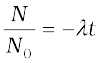 (13.13)
which gives
N(t) = N0 e −λ t (13.14)
Note, for example, the light bulbs follow no such exponential decay law. If we test 1000 bulbs for their life (time span before they burn out or fuse), we expect that they will ‘decay’ (that is, burn out) at more or less the same time. The decay of radionuclides follows quite a different law, the law of radioactive decay represented by Eq. (13.14).
The total decay rate R of a sample is the number of nuclei disintegrating per unit time. Suppose in a time interval dt, the decay count measured is ∆N. Then dN = – ∆N.
The positive quantity R is then defined as
R = –
Differentiating Eq. (13.14), we get
R = λN0 e −λt
or, R = R0 e –λt (13.15)
Figure 13.3 Exponential decay of a radioactive species. After a lapse of T1/2 , population of the given species drops by a factor of 2.
This is equivalant to the law of radioactivity decay, since you can integrate Eq. (13.15) to get back Eq. (13.14). Clearly, R0 = λN0 is the decay rate at t = 0. The decay rate R at a certain time t and the number of undecayed nuclei N at the same time are related by
R = λN (13.16)
The decay rate of a sample, rather than the number of radioactive nuclei, is a more direct experimentally measurable quantity and is given a specific name: activity. The SI unit for activity is becquerel, named after the discoverer of radioactivity, Henry Becquerel.
Marie Sklodowska Curie (1867-1934) Born in Poland. She is recognised both as a physicist and as a chemist. The discovery of radioactivity by Henri Becquerel in 1896 inspired Marie and her husband Pierre Curie in their researches and analyses which led to the isolation of radium and polonium elements. She was the first person to be awarded two Nobel Prizes- for Physics in 1903 and for Chemistry in 1911.
1 becquerel is simply equal to 1 disintegration or decay per second. There is also another unit named “curie” that is widely used and is related to the SI unit as:
1 curie = 1 Ci = 3.7 × 1010 decays per second
= 3.7 × 1010 Bq
Different radionuclides differ greatly in their rate of decay. A common way to characterize this feature is through the notion of half-life. Half-life of a radionuclide (denoted by T1/2) is the time it takes for a sample that has initially, say N0 radionuclei to reduce to N0/2. Putting
N = N0/2 and t = T1/2 in Eq. (13.14), we get
T1/2 =  = 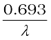 (13.17)
= 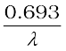 (13.17)
Clearly if N0 reduces to half its value in time T1/2, R0 will also reduce to half its value in the same time according to Eq. (13.16).
Another related measure is the average or mean life τ. This again can be obtained from Eq. (13.14). The number of nuclei which decay in the time interval t to t + ∆t is R(t)∆t (= λN0e–λt∆t). Each of them has lived for time t. Thus the total life of all these nuclei would be t λN0e–λt ∆t. It is clear that some nuclei may live for a short time while others may live longer. Therefore to obtain the mean life, we have to sum (or integrate) this expression over all times from 0 to , and divide by the total number N0 of nuclei at t = 0. Thus,
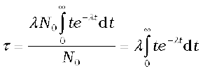
One can show by performing this integral that
τ = 1/λ
We summarise these results with the following:
T1/2 =  = τ ln 2 (13.18)
= τ ln 2 (13.18)
Radioactive elements (e.g., tritium, plutonium) which are short-lived i.e., have half-lives much less than the age of the universe (15 billion years) have obviously decayed long ago and are not found in nature. They can, however, be produced artificially in nuclear reactions.
Example 13.4 The half-life of 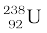 undergoing α-decay is 4.5 × 109 years. What is the activity of 1g sample of  ?
?
Solution
T1/2 = 4.5 × 109 y
= 4.5 × 109 y x 3.16 x 107 s/y
= 1.42 × 1017s
One k mol of any isotope contains Avogadro’s number of atoms, and so 1g of  contains
contains
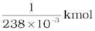 × 6.025 × 1026 atoms/kmol
= 25.3 × 1020 atoms.
The decay rate R is
R = λN
= 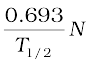 = 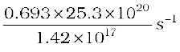
= 1.23 × 104 s–1
= 1.23 × 104 Bq
Example 13.5 Tritium has a half-life of 12.5 y undergoing beta decay. What fraction of a sample of pure tritium will remain undecayed
after 25 y.
Solution
By definition of half-life, half of the initial sample will remain undecayed after 12.5 y. In the next 12.5 y, one-half of these nuclei would have decayed. Hence, one fourth of the sample of the initial pure tritium will remain undecayed.
13.6.2 Alpha decay
A well-known example of alpha decay is the decay of uranium  to thorium 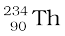 with the emission of a helium nucleus
to thorium 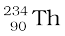 with the emission of a helium nucleus 
 →
→  +
+  (α-decay) (13.19)
(α-decay) (13.19)
In α-decay, the mass number of the product nucleus (daughter nucleus) is four less than that of the decaying nucleus (parent nucleus), while the atomic number decreases by two. In general, α-decay of a parent nucleus 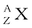 results in a daughter nucleus 
 →
→  + (13.20)
+ (13.20)
From Einstein’s mass-energy equivalance relation [Eq. (13.6)] and energy conservation, it is clear that this spontaneous decay is possible only when the total mass of the decay products is less than the mass of the initial nucleus. This difference in mass appears as kinetic energy of the products. By referring to a table of nuclear masses, one can check that the total mass of  and
and  is indeed less than that of
is indeed less than that of  .
.
The disintegration energy or the Q-value of a nuclear reaction is the difference between the initial mass energy and the total mass energy of the decay products. For α-decay
Q = (mX – mY – mHe) c2 (13.21)
Q is also the net kinetic energy gained in the process or, if the initial nucleus X is at rest, the kinetic energy of the products. Clearly, Q> 0 for exothermic processes such as α-decay.
Example 13.6 We are given the following atomic masses:
 = 238.05079 u
= 238.05079 u  = 4.00260 u
= 4.00260 u
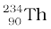 = 234.04363 u  = 1.00783 u
= 1.00783 u
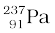= 237.05121 u
Here the symbol Pa is for the element protactinium (Z = 91).
(a) Calculate the energy released during the alpha decay of  .
.
(b) Show that 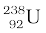 can not spontaneously emit a proton.
Solution
(a) The alpha decay of 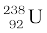 is given by Eq. (13.20). The energy released in this process is given by
Q = (MU – MTh – MHe) c2
Substituting the atomic masses as given in the data, we find
Q = (238.05079 – 234.04363 – 4.00260)u × c2
= (0.00456 u) c2
= (0.00456 u) (931.5 MeV/u)
= 4.25 MeV.
(b) If  spontaneously emits a proton, the decay process would be
spontaneously emits a proton, the decay process would be
 → + 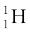
→ + 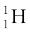
The Q for this process to happen is
= (MU – MPa – MH) c2
= (238.05079 – 237.05121 – 1.00783) u × c2
= (– 0.00825 u) c2
= – (0.00825 u)(931.5 MeV/u)
= – 7.68 MeV
Thus, the Q of the process is negative and therefore it cannot proceed spontaneously. We will have to supply an energy of 7.68 MeV to a  nucleus to make it emit a proton.
nucleus to make it emit a proton.
13.6.3 Beta decay
In beta decay, a nucleus spontaneously emits an electron (β− decay) or a positron (β+ decay). A common example of β− decay is
 (13.22)
(13.22)
and that of β+ decay is
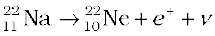 (13.23)
The decays are governed by the Eqs. (13.14) and (13.15), so that one can never predict which nucleus will undergo decay, but one can characterize the decay by a half-life T1/2 . For example, T1/2 for the decays above is respectively 14.3 d and 2.6y. The emission of electron in β− decay is accompanied by the emission of an antineutrino (); in β+ decay, instead, a neutrino (ν) is generated. Neutrinos are neutral particles with very small (possiblly, even zero) mass compared to electrons. They have only weak interaction with other particles. They are, therefore, very difficult to detect, since they can penetrate large quantity of matter (even earth) without any interaction.
In both β− and β+ decay, the mass number A remains unchanged. In β− decay, the atomic number Z of the nucleus goes up by 1, while in β+ decay Z goes down by 1. The basic nuclear process underlying β− decay is the conversion of neutron to proton
n → p + e– + 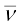 (13.24)
while for β+ decay, it is the conversion of proton into neutron
p → n + e+ + ν (13.25)
Note that while a free neutron decays to proton, the decay of proton to neutron [Eq. (13.25)] is possible only inside the nucleus, since proton has smaller mass than neutron.
13.6.4 Gamma decay
Like an atom, a nucleus also has discrete energy levels - the ground state and excited states. The scale of energy is, however, very different. Atomic energy level spacings are of the order of eV, while the difference in nuclear energy levels is of the order of MeV. When a nucleus in an excited state spontaneously decays to its ground state (or to a lower energy state), a photon is emitted with energy equal to the difference in the two energy levels of the nucleus. This is the so-called gamma decay. The energy (MeV) corresponds to radiation of extremely short wavelength, shorter than the hard X-ray region.
Figure 13.4 β-decay of nucleus followed by emission of two γ rays from deexcitation of the daughter
nucleus  .
.
Typically, a gamma ray is emitted when a α or β decay results in a daughter nucleus in an excited state. This then returns to the ground state by a single photon transition or successive transitions involving more than one photon. A familiar example is the successive emmission of gamma rays of energies 1.17 MeV and 1.33 MeV from the deexcitation of  nuclei formed from β− decay of
nuclei formed from β− decay of  .
.
The curve of binding energy per nucleon Ebn, given in Fig. 13.1, has a long flat middle region between A = 30 and A = 170. In this region the binding energy per nucleon is nearly constant (8.0 MeV). For the lighter nuclei region, A < 30, and for the heavier nuclei region, A > 170, the binding energy per nucleon is less than 8.0 MeV, as we have noted earlier. Now, the greater the binding energy, the less is the total mass of a bound system, such as a nucleus. Consequently, if nuclei with less total binding energy transform to nuclei with greater binding energy, there will be a net energy release. This is what happens when a heavy nucleus decays into two or more intermediate mass fragments (fission) or when light nuclei fuse into a havier nucleus (fusion.)
Exothermic chemical reactions underlie conventional energy sources such as coal or petroleum. Here the energies involved are in the range of electron volts. On the other hand, in a nuclear reaction, the energy release is of the order of MeV. Thus for the same quantity of matter, nuclear sources produce a million times more energy than a chemical source. Fission of 1 kg of uranium, for example, generates 1014 J of energy; compare it with burning of 1 kg of coal that gives 107 J.
13.7.1 Fission
New possibilities emerge when we go beyond natural radioactive decays and study nuclear reactions by bombarding nuclei with other nuclear particles such as proton, neutron, α-particle, etc.
A most important neutron-induced nuclear reaction is fission. An example of fission is when a uranium isotope  bombarded with a neutron breaks into two intermediate mass nuclear fragments
bombarded with a neutron breaks into two intermediate mass nuclear fragments
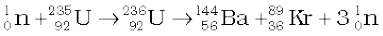 (13.26)
The same reaction can produce other pairs of intermediate mass fragments
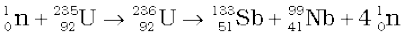 (13.27)
Or, as another example,
 (13.28)
(13.28)
The fragment products are radioactive nuclei; they emit β particles in succession to achieve stable end products.
The energy released (the Q value ) in the fission reaction of nuclei like uranium is of the order of 200 MeV per fissioning nucleus. This is estimated as follows:
Let us take a nucleus with A = 240 breaking into two fragments each of A = 120. Then
Ebn for A = 240 nucleus is about 7.6 MeV,
Ebn for the two A = 120 fragment nuclei is about 8.5 MeV.
∴ Gain in binding energy for nucleon is about 0.9 MeV.
Hence the total gain in binding energy is 240×0.9 or 216 MeV.
The disintegration energy in fission events first appears as the kinetic energy of the fragments and neutrons. Eventually it is transferred to the surrounding matter appearing as heat. The source of energy in nuclear reactors, which produce electricity, is nuclear fission. The enormous energy released in an atom bomb comes from uncontrolled nuclear fission. We discuss some details in the next section how a nuclear reactor functions.
13.7.2 Nuclear reactor
Notice one fact of great importance in the fission reactions given in Eqs. (13.26) to (13.28). There is a release of extra neutron (s) in the fission process. Averagely, 2½ neutrons are released per fission of uranium nucleus. It is a fraction since in some fission events 2 neutrons are produced, in some 3, etc. The extra neutrons in turn can initiate fission processes, producing still more neutrons, and so on. This leads to the possibility of a chain reaction, as was first suggested by Enrico Fermi. If the chain reaction is controlled suitably, we can get a steady energy output. This is what happens in a nuclear reactor. If the chain reaction is uncontrolled, it leads to explosive energy output, as in a nuclear bomb.
INDIA’S ATOMIC ENERGY PROGRAMME
The atomic energy programme in India was launched around the time of independence under the leadership of Homi J. Bhabha (1909-1966). An early historic achievement was the design and construction of the first nuclear reactor in India (named Apsara) which went critical on August 4, 1956. It used enriched uranium as fuel and water as moderator. Following this was another notable landmark: the construction of CIRUS (Canada India Research U.S.) reactor in 1960. This 40 MW reactor used natural uranium as fuel and heavy water as moderator. Apsara and CIRUS spurred research in a wide range of areas of basic and applied nuclear science. An important milestone in the first two decades of the programme was the indigenous design and construction of the plutonium plant at Trombay, which ushered in the technology of fuel reprocessing (separating useful fissile and fertile nuclear materials from the spent fuel of a reactor) in India. Research reactors that have been subsequently commissioned include ZERLINA, PURNIMA (I, II and III), DHRUVA and KAMINI. KAMINI is the country’s first large research reactor that uses U-233 as fuel. As the name suggests, the primary objective of a research reactor is not generation of power but to provide a facility for research on different aspects of nuclear science and technology. Research reactors are also an excellent source for production of a variety of radioactive isotopes that find application in diverse fields: industry, medicine and agriculture.
The main objectives of the Indian Atomic Energy programme are to provide safe and reliable electric power for the country’s social and economic progress and to be self-reliant in all aspects of nuclear technology. Exploration of atomic minerals in India undertaken since the early fifties has indicated that India has limited reserves of uranium, but fairly abundant reserves of thorium. Accordingly, our country has adopted a three-stage strategy of nuclear power generation. The first stage involves the use of natural uranium as a fuel, with heavy water as moderator. The Plutonium-239 obtained from reprocessing of the discharged fuel from the reactors then serves as a fuel for the second stage — the fast breeder reactors. They are so called because they use fast neutrons for sustaining the chain reaction (hence no moderator is needed) and, besides generating power, also breed more fissile species (plutonium) than they consume. The third stage, most significant in the long term, involves using fast breeder reactors to produce fissile Uranium-233 from Thorium-232 and to build power reactors based on them.
India is currently well into the second stage of the programme and considerable work has also been done on the third — the thorium utilisation — stage. The country has mastered the complex technologies of mineral exploration and mining, fuel fabrication, heavy water production, reactor design, construction and operation, fuel reprocessing, etc. Pressurised Heavy Water Reactors (PHWRs) built at different sites in the country mark the accomplishment of the first stage of the programme. India is now more than self-sufficient in heavy water production. Elaborate safety measures both in the design and operation of reactors, as also adhering to stringent standards of radiological protection are the hallmark of the Indian Atomic Energy Programme.
There is, however, a hurdle in sustaining a chain reaction, as described here. It is known experimentally that slow neutrons (thermal neutrons) are much more likely to cause fission in  than fast
than fast
neutrons. Also fast neutrons liberated in fission would escape instead of causing another fission reaction.
 is 2 MeV. These neutrons unless slowed down will escape from the reactor without interacting with the uranium nuclei, unless a very large amount of fissionable material is used for sustaining the chain reaction. What one needs to do is to slow down the fast neutrons by elastic scattering with light nuclei. In fact, Chadwick’s experiments showed that in an elastic collision with hydrogen the neutron almost comes to rest and proton carries away the energy. This is the same situation as when a marble hits head-on an identical marble at rest. Therefore, in reactors, light nuclei called moderators are provided along with the fissionable nuclei for slowing down fast neutrons. The moderators commonly used are water, heavy water (D2O) and graphite. The Apsara reactor at the Bhabha Atomic Research Centre (BARC), Mumbai, uses water as moderator. The other Indian reactors, which are used for power production, use heavy water as moderator.
is 2 MeV. These neutrons unless slowed down will escape from the reactor without interacting with the uranium nuclei, unless a very large amount of fissionable material is used for sustaining the chain reaction. What one needs to do is to slow down the fast neutrons by elastic scattering with light nuclei. In fact, Chadwick’s experiments showed that in an elastic collision with hydrogen the neutron almost comes to rest and proton carries away the energy. This is the same situation as when a marble hits head-on an identical marble at rest. Therefore, in reactors, light nuclei called moderators are provided along with the fissionable nuclei for slowing down fast neutrons. The moderators commonly used are water, heavy water (D2O) and graphite. The Apsara reactor at the Bhabha Atomic Research Centre (BARC), Mumbai, uses water as moderator. The other Indian reactors, which are used for power production, use heavy water as moderator.
Because of the use of moderator, it is possible that the ratio, K, of number of fission produced by a given generation of neutrons to the number of fission of the preceeding generation may be greater than one. This ratio is called the multiplication factor; it is the measure of the growth rate of the neutrons in the reactor. For K = 1, the operation of the reactor is said to be critical, which is what we wish it to be for steady power operation. If K becomes greater than one, the reaction rate and the reactor power increases exponentially. Unless the factor K is brought down very close to unity, the reactor will become supercritical and can even explode. The explosion of the Chernobyl reactor in Ukraine in 1986 is a sad reminder that accidents in a nuclear reactor can be catastrophic.
The reaction rate is controlled through control-rods made out of neutron-absorbing material such as cadmium. In addition to control rods, reactors are provided with safety rods which, when required, can be inserted into the reactor and K can be reduced rapidly to less than unity.
The more abundant isotope  in naturally occurring uranium is non-fissionable. When it captures a neutron, it produces the highly radioactive plutonium through these reactions
in naturally occurring uranium is non-fissionable. When it captures a neutron, it produces the highly radioactive plutonium through these reactions

 (13.29)
(13.29)
Plutonium undergoes fission with slow neutrons.
Figure 13.5 shows the schematic diagram of a nuclear reactor based on thermal neutron fission. The core of the reactor is the site of nuclear fission. It contains the fuel elements in suitably fabricated form. The fuel may be say enriched uranium (i.e., one that has greater abundance of  than naturally occurring uranium). The core contains a moderator to slow down the neutrons. The core is surrounded by a reflector to reduce leakage. The energy (heat) released in fission is continuously removed by a suitable coolant. A containment vessel prevents the escape of radioactive fission products. The whole assembly is shielded to check harmful radiation from coming out. The reactor can be shut down by means of rods (made of, for example, cadmium) that have high absorption of neutrons. The coolant transfers heat to a working fluid which in turn may produce stream. The steam drives turbines and generates electricity.
than naturally occurring uranium). The core contains a moderator to slow down the neutrons. The core is surrounded by a reflector to reduce leakage. The energy (heat) released in fission is continuously removed by a suitable coolant. A containment vessel prevents the escape of radioactive fission products. The whole assembly is shielded to check harmful radiation from coming out. The reactor can be shut down by means of rods (made of, for example, cadmium) that have high absorption of neutrons. The coolant transfers heat to a working fluid which in turn may produce stream. The steam drives turbines and generates electricity.
Figure 13.5 Schematic diagram of a nuclear reactor based on thermal neutron fission.
Like any power reactor, nuclear reactors generate considerable waste products. But nuclear wastes need special care for treatment since they are radioactive and hazardous. Elaborate safety measures, both for reactor operation as well as handling and reprocessing the spent fuel, are required. These safety measures are a distinguishing feature of the Indian Atomic Energy programme. An appropriate plan is being evolved to study the possibility of converting radioactive waste into less active and short-lived material.
13.7.3 Nuclear fusion – energy generation in stars
When two light nuclei fuse to form a larger nucleus, energy is released, since the larger nucleus is more tightly bound, as seen from the binding energy curve in Fig.13.1. Some examples of such energy liberating nuclear fusion reactions are :
 + e+ + ν + 0.42 MeV [13.29(a)]
+ e+ + ν + 0.42 MeV [13.29(a)]
 + n + 3.27 MeV [13.29(b)]
+ n + 3.27 MeV [13.29(b)]
 + 4.03 MeV [13.29(c)]
+ 4.03 MeV [13.29(c)]
In the first reaction, two protons combine to form a deuteron and a positron with a release of 0.42 MeV energy. In reaction [13.29(b)], two deuterons combine to form the light isotope of helium. In reaction (13.29c), two deuterons combine to form a triton and a proton. For fusion to take place, the two nuclei must come close enough so that attractive short-range nuclear force is able to affect them. However, since they are both positively charged particles, they experience coulomb repulsion. They, therefore, must have enough energy to overcome this coulomb barrier. The height of the barrier depends on the charges and radii of the two interacting nuclei. It can be shown, for example, that the barrier height for two protons is ~ 400 keV, and is higher for nuclei with higher charges. We can estimate the temperature at which two protons in a proton gas would (averagely) have enough energy to overcome the coulomb barrier:
(3/2)k T = K 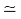 400 keV, which gives T ~ 3 × 109 K.
When fusion is achieved by raising the temperature of the system so that particles have enough kinetic energy to overcome the coulomb repulsive behaviour, it is called thermonuclear fusion.
Thermonuclear fusion is the source of energy output in the interior of stars. The interior of the sun has a temperature of 1.5×107 K, which is considerably less than the estimated temperature required for fusion of particles of average energy. Clearly, fusion in the sun involves protons whose energies are much above the average energy.
The fusion reaction in the sun is a multi-step process in which the hydrogen is burned into helium. Thus, the fuel in the sun is the hydrogen in its core. The proton-proton (p, p) cycle by which this occurs is represented by the following sets of reactions:
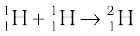+ e+ + ν + 0.42 MeV (i)
e+ + e– → γ + γ + 1.02 MeV (ii)
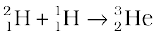+ γ + 5.49 MeV (iii)
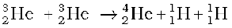+ 12.86 MeV (iv) (13.30)
For the fourth reaction to occur, the first three reactions must occur twice, in which case two light helium nuclei unite to form ordinary helium nucleus. If we consider the combination 2(i) + 2(ii) + 2(iii) +(iv), the net effect is

or  (13.31)
(13.31)
Thus, four hydrogen atoms combine to form an 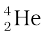 atom with a release of 26.7 MeV of energy.
Helium is not the only element that can be synthesized in the interior of a star. As the hydrogen in the core gets depleted and becomes helium, the core starts to cool. The star begins to collapse under its own gravity which increases the temperature of the core. If this temperature increases to about 108 K, fusion takes place again, this time of helium nuclei into carbon. This kind of process can generate through fusion higher and higher mass number elements. But elements more massive than those near the peak of the binding energy curve in Fig. 13.1 cannot be so produced.
The age of the sun is about 5×109 y and it is estimated that there is enough hydrogen in the sun to keep it going for another 5 billion years. After that, the hydrogen burning will stop and the sun will begin to cool and will start to collapse under gravity, which will raise the core temperature. The outer envelope of the sun will expand, turning it into the so called red giant.
13.7.4 Controlled thermonuclear fusion
The natural thermonuclear fusion process in a star is replicated in a thermonuclear fusion device. In controlled fusion reactors, the aim is to generate steady power by heating the nuclear fuel to a temperature in the range of 108 K. At these temperatures, the fuel is a mixture of positive ions and electrons (plasma). The challenge is to confine this plasma, since no container can stand such a high temperature. Several countries around the world including India are developing techniques in this connection. If successful, fusion reactors will hopefully supply almost unlimited power to humanity.
NUCLEAR HOLOCAUST
In a single uranium fission about 0.9×235 MeV (≈200 MeV) of energy is liberated. If each nucleus of about 50 kg of 235U undergoes fission the amount of energy involved is about 4 × 1015J. This energy is equivalent to about 20,000 tons of TNT, enough for a superexplosion. Uncontrolled release of large nuclear energy is called an atomic explosion. On August 6, 1945 an atomic device was used in warfare for the first time. The US dropped an atom bomb on Hiroshima, Japan. The explosion was equivalent to 20,000 tons of TNT. Instantly the radioactive products devastated 10 sq km of the city which had 3,43,000 inhabitants. Of this number 66,000 were killed and 69,000 were injured; more than 67% of the city’s structures were destroyed.
High temperature conditions for fusion reactions can be created by exploding a fission bomb. Super-explosions equivalent to 10 megatons of explosive power of TNT were tested in 1954. Such bombs which involve fusion of isotopes of hydrogen, deuterium and tritium are called hydrogen bombs. It is estimated that a nuclear arsenal sufficient to destroy every form of life on this planet several times over is in position to be triggered by the press of a button. Such a nuclear holocaust will not only destroy the life that exists now but its radioactive fallout will make this planet unfit for life for all times. Scenarios based on theoretical calculations predict a long nuclear winter, as the radioactive waste will hang like a cloud in the earth’s atmosphere and will absorb the sun’s radiation.
Example 13.7 Answer the following questions:
(a) Are the equations of nuclear reactions (such as those given in Section 13.7) ‘balanced’ in the sense a chemical equation (e.g., 2H2 + O2→ 2 H2O) is? If not, in what sense are they balanced on both sides?
(b) If both the number of protons and the number of neutrons are conserved in each nuclear reaction, in what way is mass converted into energy (or vice-versa) in a nuclear reaction?
(c) A general impression exists that mass-energy interconversion takes place only in nuclear reaction and never in chemical reaction. This is strictly speaking, incorrect. Explain.
Solution
(a) A chemical equation is balanced in the sense that the number of atoms of each element is the same on both sides of the equation. A chemical reaction merely alters the original combinations of atoms. In a nuclear reaction, elements may be transmuted. Thus, the number of atoms of each element is not necessarily conserved in a nuclear reaction. However, the number of protons and the number of neutrons are both separately conserved in a nuclear reaction. [Actually, even this is not strictly true in the realm of very high energies – what is strictly conserved is the total charge and total ‘baryon number’. We need not pursue this matter here.]
In nuclear reactions (e.g., Eq. 13.26), the number of protons and the number of neutrons are the same on the two sides of the equation.
(b) We know that the binding energy of a nucleus gives a negative contribution to the mass of the nucleus (mass defect). Now, since proton number and neutron number are conserved in a nuclear reaction, the total rest mass of neutrons and protons is the same on either side of a reaction. But the total binding energy of nuclei on the left side need not be the same as that on the right hand side. The difference in these binding energies appears as energy released or absorbed in a nuclear reaction. Since binding energy contributes to mass, we say that the difference in the total mass of nuclei on the two sides get converted into energy or vice-versa. It is in these sense that a nuclear reaction is an example of mass-energy interconversion.
(c) From the point of view of mass-energy interconversion, a chemical reaction is similar to a nuclear reaction in principle. The energy released or absorbed in a chemical reaction can be traced to the difference in chemical (not nuclear) binding energies of atoms and molecules on the two sides of a reaction. Since, strictly speaking, chemical binding energy also gives a negative contribution (mass defect) to the total mass of an atom or molecule, we can equally well say that the difference in the total mass of atoms or molecules, on the two sides of the chemical reaction gets converted into energy or vice-versa. However, the mass defects involved in a chemical reaction are almost a million times smaller than those in a nuclear reaction.This is the reason for the general impression, (which is incorrect) that mass-energy interconversion does not take place in a chemical reaction.
SUMMARY
1. An atom has a nucleus. The nucleus is positively charged. The radius of the nucleus is smaller than the radius of an atom by a factor of 104. More than 99.9% mass of the atom is concentrated in the nucleus.
2. On the atomic scale, mass is measured in atomic mass units (u). By definition, 1 atomic mass unit (1u) is 1/12th mass of one atom of 12C;
1u = 1.660563 × 10–27 kg.
3. A nucleus contains a neutral particle called neutron. Its mass is almost the same as that of proton
4. The atomic number Z is the number of protons in the atomic nucleus of an element. The mass number A is the total number of protons and neutrons in the atomic nucleus; A = Z+N; Here N denotes the number of neutrons in the nucleus.
A nuclear species or a nuclide is represented as  , where X is the chemical symbol of the species.
, where X is the chemical symbol of the species.
Nuclides with the same atomic number Z, but different neutron number N are called isotopes. Nuclides with the same A are isobars and those with the same N are isotones.
Most elements are mixtures of two or more isotopes. The atomic mass of an element is a weighted average of the masses of its isotopes. The masses are the relative abundances of the isotopes.
5. A nucleus can be considered to be spherical in shape and assigned a radius. Electron scattering experiments allow determination of the nuclear radius; it is found that radii of nuclei fit the formula
R = R0 A1/3,
where R0 = a constant = 1.2 fm. This implies that the nuclear density is independent of A. It is of the order of 1017 kg/m3.
6. Neutrons and protons are bound in a nucleus by the short-range strong nuclear force. The nuclear force does not distinguish between neutron and proton.
7. The nuclear mass M is always less than the total mass, Σm, of its constituents. The difference in mass of a nucleus and its constituents is called the mass defect,
∆M = (Z mp + (A – Z)mn) – M
Using Einstein’s mass energy relation, we express this mass difference in terms of energy as
∆Eb = ∆M c2
The energy ∆Eb represents the binding energy of the nucleus. In the mass number range A = 30 to 170, the binding energy per nucleon is nearly constant, about 8 MeV/nucleon.
8. Energies associated with nuclear processes are about a million times larger than chemical process.
9. The Q-value of a nuclear process is
Q = final kinetic energy – initial kinetic energy.
Due to conservation of mass-energy, this is also,
Q = (sum of initial masses – sum of final masses)c2
10. Radioactivity is the phenomenon in which nuclei of a given species transform by giving out α or β or γ rays; α-rays are helium nuclei;
β-rays are electrons. γ-rays are electromagnetic radiation of wavelengths shorter than X-rays;
11. Law of radioactive decay : N (t) = N(0) e–λt
where λ is the decay constant or disintegration constant.
The half-life T1/2 of a radionuclide is the time in which N has been reduced to one-half of its initial value. The mean life τ is the time at which N has been reduced to e–1 of its initial value
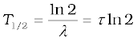
12. Energy is released when less tightly bound nuclei are transmuted into more tightly bound nuclei. In fission, a heavy nucleus like  breaks into two smaller fragments, e.g., 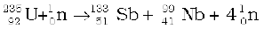
breaks into two smaller fragments, e.g., 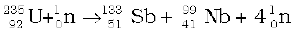
13. The fact that more neutrons are produced in fission than are consumed gives the possibility of a chain reaction with each neutron that is produced triggering another fission. The chain reaction is uncontrolled and rapid in a nuclear bomb explosion. It is controlled and steady in a nuclear reactor. In a reactor, the value of the neutron multiplication factor k is maintained at 1.
14. In fusion, lighter nuclei combine to form a larger nucleus. Fusion of hydrogen nuclei into helium nuclei is the source of energy of all stars including our sun.
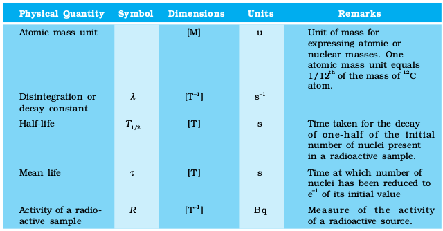
Points to Ponder
1. The density of nuclear matter is independent of the size of the nucleus. The mass density of the atom does not follow this rule.
2. The radius of a nucleus determined by electron scattering is found to be slightly different from that determined by alpha-particle scattering. This is because electron scattering senses the charge distribution of the nucleus, whereas alpha and similar particles sense the nuclear matter.
3. After Einstein showed the equivalence of mass and energy, E = mc2, we cannot any longer speak of separate laws of conservation of mass and conservation of energy, but we have to speak of a unified law of conservation of mass and energy. The most convincing evidence that this principle operates in nature comes from nuclear physics. It is central to our understanding of nuclear energy and harnessing it as a source of power. Using the principle, Q of a nuclear process (decay or reaction) can be expressed also in terms of initial and final masses.
4. The nature of the binding energy (per nucleon) curve shows that exothermic nuclear reactions are possible, when two light nuclei fuse or when a heavy nucleus undergoes fission into nuclei with intermediate mass.
5. For fusion, the light nuclei must have sufficient initial energy to overcome the coulomb potential barrier. That is why fusion requires very high temperatures.
6. Although the binding energy (per nucleon) curve is smooth and slowly varying, it shows peaks at nuclides like 4He, 16O etc. This is considered as evidence of atom-like shell structure in nuclei.
7. Electrons and positron are a particle-antiparticle pair. They are identical in mass; their charges are equal in magnitude and opposite. (It is found that when an electron and a positron come together, they annihilate each other giving energy in the form of gamma-ray photons.)
8. In β--decay (electron emission), the particle emitted along with electron is anti-neutrino ( ). On the other hand, the particle emitted in β+-decay (positron emission) is neutrino (ν). Neutrino and anti-neutrino are a particle-antiparticle pair. There are anti particles associated with every particle. What should be antiproton which is the anti particle of the proton?
). On the other hand, the particle emitted in β+-decay (positron emission) is neutrino (ν). Neutrino and anti-neutrino are a particle-antiparticle pair. There are anti particles associated with every particle. What should be antiproton which is the anti particle of the proton?
9. A free neutron is unstable (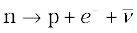). But a similar free proton decay is not possible, since a proton is (slightly) lighter than a neutron.
10. Gamma emission usually follows alpha or beta emission. A nucleus in an excited (higher) state goes to a lower state by emitting a gamma photon. A nucleus may be left in an excited state after alpha or beta emission. Successive emission of gamma rays from the same nucleus (as in case of 60Ni, Fig. 13.4) is a clear proof that nuclei also have discrete energy levels as do the atoms.
11. Radioactivity is an indication of the instability of nuclei. Stability requires the ratio of neutron to proton to be around 1:1 for light nuclei. This ratio increases to about 3:2 for heavy nuclei. (More neutrons are required to overcome the effect of repulsion among the protons.) Nuclei which are away from the stability ratio, i.e., nuclei which have an excess of neutrons or protons are unstable. In fact, only about 10% of knon isotopes (of all elements), are stable. Others have been either artificially produced in the laboratory by bombarding α, p, d, n or other particles on targets of stable nuclear species or identified in astronomical observations of matter in the universe.
You may find the following data useful in solving the exercises:
e = 1.6×10–19C N = 6.023×1023 per mole
1/(4πε0) = 9 × 109 N m2/C2 k = 1.381×10–23J 0K–1
1 MeV = 1.6×10–13J 1 u = 931.5 MeV/c2
1 year = 3.154×107 s
mH = 1.007825 u mn = 1.008665 u
m(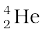) = 4.002603 u me = 0.000548 u
13.1 (a) Two stable isotopes of lithium 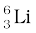 and 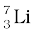 have respective abundances of 7.5% and 92.5%. These isotopes have masses 6.01512 u and 7.01600 u, respectively. Find the atomic mass
of lithium.
(b) Boron has two stable isotopes,  and
and  . Their respective masses are 10.01294 u and 11.00931 u, and the atomic mass of boron is 10.811 u. Find the abundances of
. Their respective masses are 10.01294 u and 11.00931 u, and the atomic mass of boron is 10.811 u. Find the abundances of  and 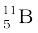.
and 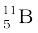.
13.2 The three stable isotopes of neon: 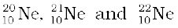 have respective abundances of 90.51%, 0.27% and 9.22%. The atomic masses of the three isotopes are 19.99 u, 20.99 u and 21.99 u, respectively. Obtain the average atomic mass of neon.
13.3 Obtain the binding energy (in MeV) of a nitrogen nucleus  , given m
, given m  =14.00307 u
=14.00307 u
13.4 Obtain the binding energy of the nuclei  and in units of MeV from the following data:
and in units of MeV from the following data:
m ( ) = 55.934939 u m (
) = 55.934939 u m ( ) = 208.980388 u
) = 208.980388 u
13.5 A given coin has a mass of 3.0 g. Calculate the nuclear energy that would be required to separate all the neutrons and protons from each other. For simplicity assume that the coin is entirely made of atoms (of mass 62.92960 u).
13.6 Write nuclear reaction equations for
(i) α-decay of (ii) α-decay of
(iii) β–-decay of (iv) β–-decay of
(v) β+-decay of (vi) β+-decay of
(vii) Electron capture of
13.7 A radioactive isotope has a half-life of T years. How long will it take the activity to reduce to a) 3.125%, b) 1% of its original value?
13.8 The normal activity of living carbon-containing matter is found to be about 15 decays per minute for every gram of carbon. This activity arises from the small proportion of radioactive present with the stable carbon isotope  . When the organism is dead, its interaction with the atmosphere (which maintains the above equilibrium activity) ceases and its activity begins to drop. From the known half-life (5730 years) of , and the measured activity, the age of the specimen can be approximately estimated. This is the principle of
. When the organism is dead, its interaction with the atmosphere (which maintains the above equilibrium activity) ceases and its activity begins to drop. From the known half-life (5730 years) of , and the measured activity, the age of the specimen can be approximately estimated. This is the principle of  dating used in archaeology. Suppose a specimen from Mohenjodaro gives an activity of 9 decays per minute per gram of carbon. Estimate the approximate age of the Indus-Valley civilisation.
dating used in archaeology. Suppose a specimen from Mohenjodaro gives an activity of 9 decays per minute per gram of carbon. Estimate the approximate age of the Indus-Valley civilisation.
13.9 Obtain the amount of  necessary to provide a radioactive source of 8.0 mCi strength. The half-life of
necessary to provide a radioactive source of 8.0 mCi strength. The half-life of  is 5.3 years.
is 5.3 years.
13.10 The half-life of  is 28 years. What is the disintegration rate of 15 mg of this isotope?
is 28 years. What is the disintegration rate of 15 mg of this isotope?
13.11 Obtain approximately the ratio of the nuclear radii of the gold isotope and the silver isotope  .
.
13.12 Find the Q-value and the kinetic energy of the emitted α-particle in the α-decay of (a)  and (b) .
and (b) .
Given m () = 226.02540 u, m ( ) = 222.01750 u,
) = 222.01750 u,
m () = 220.01137 u, m () = 216.00189 u.
13.13 The radionuclide 11C decays according to
The maximum energy of the emitted positron is 0.960 MeV.
Given the mass values:
m () = 11.011434 u and m () = 11.009305 u,
calculate Q and compare it with the maximum energy of the positron emitted.
13.14 The nucleus  decays by β– emission. Write down the β-decay equation and determine the maximum kinetic energy of the electrons emitted. Given that:
decays by β– emission. Write down the β-decay equation and determine the maximum kinetic energy of the electrons emitted. Given that:
m () = 22.994466 u
m () = 22.089770 u.
13.15 The Q value of a nuclear reaction A + b → C + d is defined by
Q = [ mA + mb – mC – md]c2
where the masses refer to the respective nuclei. Determine from the given data the Q-value of the following reactions and state whether the reactions are exothermic or endothermic.
(i)
(ii)
Atomic masses are given to be
m () = 2.014102 u
m () = 3.016049 u
m () = 12.000000 u
m () = 19.992439 u
13.16 Suppose, we think of fission of a nucleus into two equal fragments,  . Is the fission energetically possible? Argue by working out Q of the process. Given m (
. Is the fission energetically possible? Argue by working out Q of the process. Given m ( ) = 55.93494 u and
) = 55.93494 u and
m () = 27.98191 u.
13.17 The fission properties of are very similar to those of . The average energy released per fission is 180 MeV. How much energy, in MeV, is released if all the atoms in 1 kg of pure  undergo fission?
undergo fission?
13.18 A 1000 MW fission reactor consumes half of its fuel in 5.00 y. How much  did it contain initially? Assume that the reactor operates 80% of the time, that all the energy generated arises from the fission of
did it contain initially? Assume that the reactor operates 80% of the time, that all the energy generated arises from the fission of  and that this nuclide is consumed only by the fission process.
and that this nuclide is consumed only by the fission process.
13.19 How long can an electric lamp of 100W be kept glowing by fusion of 2.0 kg of deuterium? Take the fusion reaction as
13.20 Calculate the height of the potential barrier for a head on collision of two deuterons. (Hint: The height of the potential barrier is given by the Coulomb repulsion between the two deuterons when they just touch each other. Assume that they can be taken as hard spheres of radius 2.0 fm.)
13.21 From the relation R = R0A1/3, where R0 is a constant and A is the mass number of a nucleus, show that the nuclear matter density is nearly constant (i.e. independent of A).
13.22 For the β+ (positron) emission from a nucleus, there is another competing process known as electron capture (electron from an inner orbit, say, the K–shell, is captured by the nucleus and a neutrino is emitted).
Show that if β+ emission is energetically allowed, electron capture is necessarily allowed but not vice–versa.
Additional Exercises
13.23 In a periodic table the average atomic mass of magnesium is given as 24.312 u. The average value is based on their relative natural abundance on earth. The three isotopes and their masses are (23.98504u), (24.98584u) and (25.98259u). The natural abundance of is 78.99% by mass. Calculate the abundances of other two isotopes.
13.24 The neutron separation energy is defined as the energy required to remove a neutron from the nucleus. Obtain the neutron separation energies of the nuclei and from the following data:
m() = 39.962591 u
m( ) = 40.962278 u
) = 40.962278 u
m() = 25.986895 u
m( ) = 26.981541 u
) = 26.981541 u
13.25 A source contains two phosphorous radio nuclides (T1/2 = 14.3d) and (T1/2 = 25.3d). Initially, 10% of the decays come from  . How long one must wait until 90% do so?
. How long one must wait until 90% do so?
13.26 Under certain circumstances, a nucleus can decay by emitting a particle more massive than an α-particle. Consider the following decay processes:
Calculate the Q-values for these decays and determine that both are energetically allowed.
13.27 Consider the fission of by fast neutrons. In one fission event, no neutrons are emitted and the final end products, after the beta decay of the primary fragments, are and . Calculate Q for this fission process. The relevant atomic and particle masses are
m( ) =238.05079 u
) =238.05079 u
m( ) =139.90543 u
) =139.90543 u
m( ) = 98.90594 u
) = 98.90594 u
13.28 Consider the D–T reaction (deuterium–tritium fusion)
(a) Calculate the energy released in MeV in this reaction from the data:
m()=2.014102 u
m() =3.016049 u
(b) Consider the radius of both deuterium and tritium to be approximately 2.0 fm. What is the kinetic energy needed to overcome the coulomb repulsion between the two nuclei? To what temperature must the gas be heated to initiate the reaction?
(Hint: Kinetic energy required for one fusion event =average thermal kinetic energy available with the interacting particles = 2(3kT/2); k = Boltzman’s constant, T = absolute temperature.)
13.29 Obtain the maximum kinetic energy of β-particles, and the radiation frequencies of γ decays in the decay scheme shown in Fig. 13.6. You are given that
m(198Au) = 197.968233 u
m(198Hg) =197.966760 u

Figure13.6
13.30 Calculate and compare the energy released by a) fusion of 1.0 kg of hydrogen deep within Sun and b) the fission of 1.0 kg of 235U in a fission reactor.
13.31 Suppose India had a target of producing by 2020 AD, 200,000 MW of electric power, ten percent of which was to be obtained from nuclear power plants. Suppose we are given that, on an average, the efficiency of utilization (i.e. conversion to electric energy) of thermal energy produced in a reactor was 25%. How much amount of fissionable uranium would our country need per year by 2020? Take the heat energy per fission of 235U to be about 200MeV.